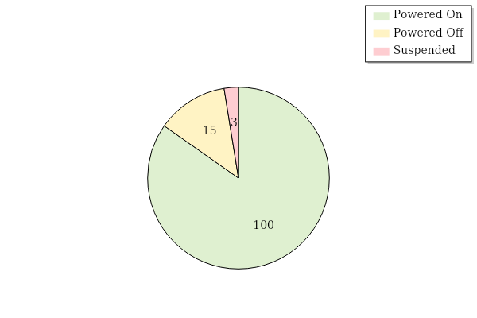
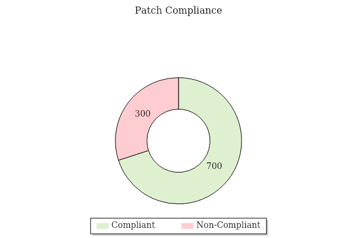
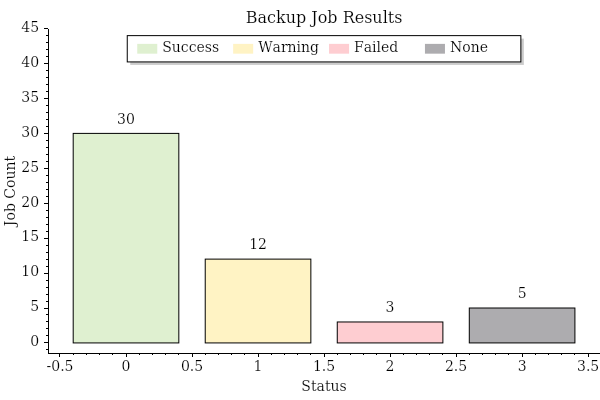
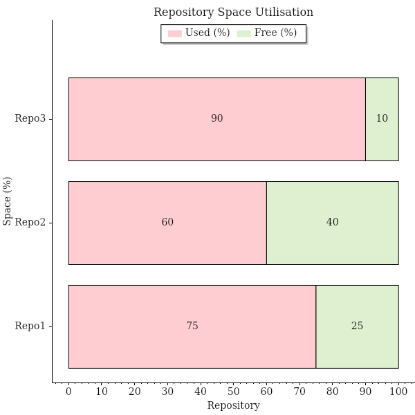
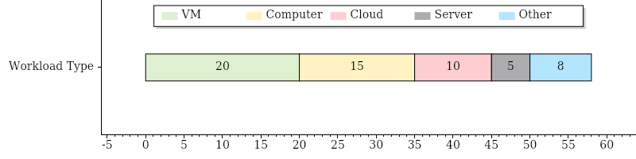
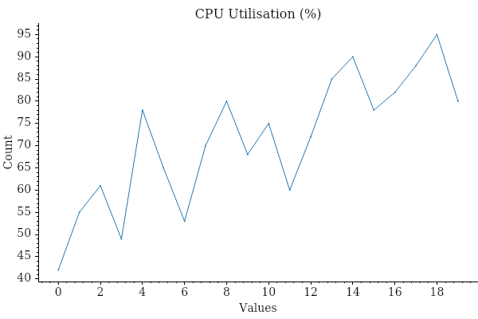
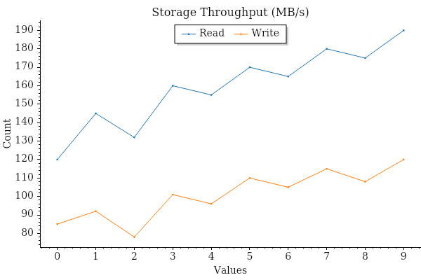
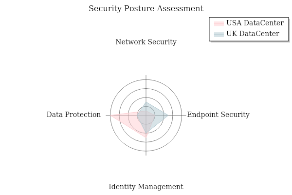
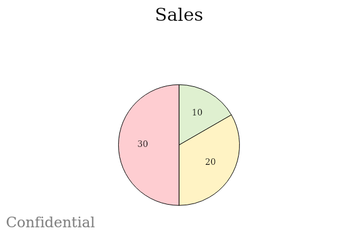

Adding Charts to a Report Module
AsBuiltReport.Chart is an optional PowerShell module that adds chart generation capabilities to AsBuiltReport report modules. It provides seven chart types — pie, donut, bar, stacked bar, single stacked bar, radar, and signal — and integrates directly with the PScribo document framework used by AsBuiltReport.
Charts are generated in memory as base64-encoded images and embedded directly into the report output using PScribo's Image cmdlet. No intermediate files are written to disk.
Prerequisite Reading
This guide assumes you are already familiar with creating AsBuiltReport report modules. If not, read the Creating a Report Module guide first.
Installation
Install AsBuiltReport.Chart from the PowerShell Gallery:
Declaring the Dependency
Add AsBuiltReport.Chart to the RequiredModules array in your module manifest (.psd1). This ensures the module is automatically installed when your report module is installed.
RequiredModules = @(
@{
ModuleName = 'AsBuiltReport.Core'
ModuleVersion = '1.6.4'
}
@{
ModuleName = 'AsBuiltReport.Chart'
ModuleVersion = '0.3.2'
}
)
How Charts Are Embedded
All chart cmdlets accept a -Format base64 parameter that returns the chart as a base64-encoded string rather than writing a file to disk. This string is then passed directly to PScribo's Image cmdlet.
# Generate chart as base64 string
$chartFileItem = New-PieChart -Title 'VM Power States' `
-Values $chartValues `
-Labels $chartLabels `
-Format base64 `
-Width 600 -Height 400
# Embed the chart in the PScribo report
if ($chartFileItem) {
Image -Text 'VM Power State Distribution' -Align 'Center' -Percent 100 -Base64 $chartFileItem
}
The Image cmdlet is provided by PScribo and is available inside any Section block in your report module.
Data Preparation
Chart cmdlets require their input arrays to be explicitly typed. Always cast labels to [string[]] and values to [double[]] before passing them to a chart cmdlet.
$sampleData = [ordered]@{
'Success' = 85
'Warning' = 12
'Failed' = 3
}
$chartLabels = [string[]]$sampleData.Keys
$chartValues = [double[]]$sampleData.Values
Chart Types
Pie Chart
Use New-PieChart to show proportional distribution across categories — for example, VM power states, job results, or license usage by type.
$sampleData = [ordered]@{
'Powered On' = ($VMs | Where-Object { $_.PowerState -eq 'PoweredOn' } | Measure-Object).Count
'Powered Off' = ($VMs | Where-Object { $_.PowerState -eq 'PoweredOff' } | Measure-Object).Count
'Suspended' = ($VMs | Where-Object { $_.PowerState -eq 'Suspended' } | Measure-Object).Count
}
$chartLabels = [string[]]$sampleData.Keys
$chartValues = [double[]]$sampleData.Values
$chartFileItem = New-PieChart `
-Title ' ' `
-Values $chartValues `
-Labels $chartLabels `
-EnableCustomColorPalette `
-CustomColorPalette @('#DFF0D0', '#FFF3C4', '#FECDD1') `
-Width 600 -Height 400 `
-Format base64 `
-EnableLegend `
-LegendOrientation Vertical `
-LegendAlignment UpperRight `
-TitleFontBold `
-TitleFontSize 16
Pie Chart example output:

Donut Chart
Use New-DonutChart for the same use cases as a pie chart when you want to emphasise completion. Donut charts can also be used to show progress towards a goal — for example, patch compliance percentage or licence consumption.
$sampleData = [ordered]@{
'Compliant' = ($ComputersPatched | Measure-Object).Count
'Non-Compliant' = ($ComputersNotPatched | Measure-Object).Count
}
$chartLabels = [string[]]$sampleData.Keys
$chartValues = [double[]]$sampleData.Values
$chartFileItem = New-DonutChart `
-Values $chartValues `
-Labels $chartLabels `
-EnableCustomColorPalette `
-CustomColorPalette @('#DFF0D0', '#FECDD1') `
-Width 600 -Height 400 `
-Format base64 `
-EnableLegend `
-LegendOrientation Horizontal `
-LegendAlignment LowerCenter `
-TitleFontBold `
-TitleFontSize 16
Donut Chart example output:

Bar Chart
Use New-BarChart to compare values across discrete categories — for example, backup job results by status, or compliance check outcomes.
$sampleData = [ordered]@{
'Success' = ($Jobs | Where-Object { $_.LatestStatus -eq 'Success' } | Measure-Object).Count
'Warning' = ($Jobs | Where-Object { $_.LatestStatus -eq 'Warning' } | Measure-Object).Count
'Failed' = ($Jobs | Where-Object { $_.LatestStatus -eq 'Failed' } | Measure-Object).Count
'None' = ($Jobs | Where-Object { $_.LatestStatus -eq 'None' } | Measure-Object).Count
}
$chartLabels = [string[]]$sampleData.Keys
$chartValues = [double[]]$sampleData.Values
$chartFileItem = New-BarChart `
-Title 'Backup Job Results' `
-Values $chartValues `
-Labels $chartLabels `
-LabelXAxis 'Status' `
-LabelYAxis 'Job Count' `
-EnableCustomColorPalette `
-CustomColorPalette @('#DFF0D0', '#FFF3C4', '#FECDD1', '#ADACAF') `
-Width 600 -Height 400 `
-Format base64 `
-EnableLegend `
-LegendOrientation Horizontal `
-LegendAlignment UpperCenter `
-AxesMarginsTop 0.5 `
-TitleFontBold `
-TitleFontSize 16
Bar Chart example output:

Stacked Bar Chart
Use New-StackedBarChart when each bar is composed of multiple segments — for example, repository used space vs. free space, or resource allocation across multiple hosts.
The -Values parameter expects an array of arrays: one inner array per bar, with each element representing a segment value.
$sampleData = $Repositories | Select-Object Name, UsedSpacePercent, FreeSpacePercent
$chartLabels = [string[]]$sampleData.Name
$chartCategories = @('Used (%)', 'Free (%)')
$chartUsedValues = [double[]]$sampleData.UsedSpacePercent
$chartFreeValues = [double[]]$sampleData.FreeSpacePercent
# Build array-of-arrays: one inner array per bar (one per repository)
$chartValues = @()
foreach ($i in 0..($chartLabels.Count - 1)) {
$chartValues += , @($chartUsedValues[$i], $chartFreeValues[$i])
}
$chartFileItem = New-StackedBarChart `
-Title 'Repository Space Utilisation' `
-Values $chartValues `
-Labels $chartLabels `
-LegendCategories $chartCategories `
-EnableCustomColorPalette `
-CustomColorPalette @('#FECDD1', '#DFF0D0') `
-Width 600 -Height 600 `
-Format base64 `
-AreaOrientation Horizontal `
-LabelXAxis 'Space (%)' `
-LabelYAxis 'Repository' `
-EnableLegend `
-LegendOrientation Horizontal `
-LegendAlignment UpperCenter `
-AxesMarginsTop 0.2 `
-TitleFontBold `
-TitleFontSize 16
Stacked Bar Chart example output:

Single Stacked Bar Chart
Use New-SingleStackedBarChart to show a single bar divided into labelled segments — useful for illustrating licence consumption or a single capacity resource.
$chartLabels = [string[]]$LicenseUsage.WorkloadType
$chartValues = [double[]]$LicenseUsage.UsedInstances
$chartFileItem = New-SingleStackedBarChart `
-Title ' ' `
-Values $chartValues `
-Label 'Workload Type' `
-LegendCategories $chartLabels `
-EnableCustomColorPalette `
-CustomColorPalette @('#DFF0D0', '#FFF3C4', '#FECDD1', '#ADACAF', '#B3E5FC', '#F8BBD0') `
-Width 600 -Height 200 `
-Format base64 `
-AreaOrientation Horizontal `
-EnableLegend `
-LegendOrientation Horizontal `
-LegendAlignment UpperCenter `
-TitleFontBold `
-TitleFontSize 16
Single Stacked Bar Chart example output:

Signal Chart
Use New-SignalChart for time-series or trend data — for example, CPU utilisation over time or throughput metrics. The -Values parameter expects an array of arrays, where each inner array represents one line.
# Wrap a single line's values in a jagged array
$chartValues = @(,[double[]]@(42, 55, 61, 49, 78, 65, 53))
$chartFileItem = New-SignalChart `
-Title 'CPU Utilisation (%)' `
-Values $chartValues `
-Format base64 `
-Width 600 -Height 400 `
-TitleFontBold `
-TitleFontSize 16
Signal Chart example output:

$readThroughput = [double[]]@(120, 145, 132, 160, 155)
$writeThroughput = [double[]]@(85, 92, 78, 101, 96)
$chartValues = @(,$readThroughput) + @(,$writeThroughput)
$chartFileItem = New-SignalChart `
-Title 'Storage Throughput (MB/s)' `
-Values $chartValues `
-Labels @('Read', 'Write') `
-Format base64 `
-Width 600 -Height 400 `
-EnableLegend `
-LegendOrientation Horizontal `
-LegendAlignment UpperCenter `
-TitleFontBold `
-TitleFontSize 16
Multi-line Signal Chart example output:

Radar Chart
Use New-RadarChart to compare multiple categories across datasets — for example, security posture scores across different data centres, or feature compatibility across product versions. The radar chart is ideal for multi-dimensional performance metrics or assessment matrices where each "spoke" represents a discrete category.
Basic example — single dataset:
# For a single dataset, wrap the values array with a comma operator
$chartValues = ,@([double[]]@(3, 5, 4, 2))
$chartLabels = @('USA DataCenter')
$chartFileItem = New-RadarChart `
-Title 'Security Posture Assessment' `
-Values $chartValues `
-LegendLabels $chartLabels `
-Format base64 `
-Width 600 -Height 400 `
-ColorPalette Category20 `
-EnableLegend `
-TitleFontBold `
-TitleFontSize 16
Advanced example — multiple datasets with spoke labels:
# Multiple datasets: array of arrays, one per dataset
$chartValues = @(
@([double[]]@(1, 2, 5, 8)), # USA DataCenter scores
@([double[]]@(3, 5, 4, 2)) # UK DataCenter scores
)
$chartLabels = @('USA DataCenter', 'UK DataCenter')
$spokes = @('Network Security', 'Endpoint Security', 'Identity Management', 'Data Protection')
$chartFileItem = New-RadarChart `
-Title 'Security Posture Assessment' `
-Values $chartValues `
-LegendLabels $chartLabels `
-SpokeLabels $spokes `
-SpokesLength 9 `
-Format base64 `
-Width 600 -Height 400 `
-ColorPalette Aurora `
-EnableLegend `
-TitleFontBold `
-TitleFontSize 16
Radar Chart example output:

Key parameters:
-Values— Array or array of arrays of numeric values (one value per spoke, one array per dataset)-LegendLabels— Labels for each dataset (one label per array in-Values)-SpokeLabels— Optional labels for each spoke/axis on the radar-SpokesLength— Length of the spokes (axes); omit or set to 0 for auto-scaling
Safety Guards
Chart generation can return $null if data is empty or an error occurs. Always validate the return value before calling Image, and verify that the underlying data contains non-zero values before rendering the chart.
if ($chartFileItem -and ($chartValues | Measure-Object -Sum).Sum -ne 0) {
Image -Text 'Chart alt text' -Align 'Center' -Percent 100 -Base64 $chartFileItem
}
Wrap the entire chart generation block in a try/catch when the data collection itself could fail:
try {
$chartFileItem = New-BarChart -Title 'Job Results' -Values $chartValues -Labels $chartLabels `
-Format base64 -Width 600 -Height 400
if ($chartFileItem -and ($chartValues | Measure-Object -Sum).Sum -ne 0) {
Image -Text 'Backup job result distribution' -Align 'Center' -Percent 100 -Base64 $chartFileItem
}
} catch {
Write-PScriboMessage -IsWarning "Unable to generate chart: $($_.Exception.Message)"
}
Color Palettes
AsBuiltReport.Chart supports 25 built-in colour palettes via the -ColorPalette parameter, or a custom palette via -EnableCustomColorPalette and -CustomColorPalette.
For consistency across report modules, use the following standard palette when representing status outcomes (Success / Warning / Failed / Unknown):
$statusCustomPalette = @('#DFF0D0', '#FFF3C4', '#FECDD1', '#ADACAF')
# Green = Success, Yellow = Warning, Pink = Failed, Gray = Unknown/None
To use a built-in palette instead:
New-PieChart -Title 'Distribution' -Values $chartValues -Labels $chartLabels `
-ColorPalette Category20 -Format base64 -Width 600 -Height 400
Available palettes: Amber, Category10, Category20, Aurora, Building, ColorblindFriendly, ColorblindFriendlyDark, Dark, DarkPastel, Frost, LightOcean, LightSpectrum, Microcharts, Nero, Nord, Normal, OneHalf, OneHalfDark, PastelWheel, Penumbra, PolarNight, Redness, SnowStorm, SummerSplash, Tsitsulin
Watermarks
All chart types support an optional watermark that overlays semi-transparent text in the center of the chart. Watermarks are disabled by default and are activated only when the -EnableWatermark switch is supplied. This is useful for marking sensitive reports with classifications like "CONFIDENTIAL" or "DRAFT".
Watermark Parameters
| Parameter | Type | Default | Description |
|---|---|---|---|
-EnableWatermark |
Switch | (off) | Enables the watermark overlay |
-WatermarkText |
String | Confidential |
Text to display as the watermark |
-WatermarkFontName |
String | Arial |
Font family for the watermark text |
-WatermarkFontSize |
Int | 24 |
Font size (points) for the watermark text |
-WatermarkColor |
BasicColors | Gray |
Color of the watermark text |
-WatermarkOpacity |
Double | 0.3 |
Opacity (0.0–1.0) of the watermark; lower values are more transparent |
Watermark Examples
Default watermark — gray "Confidential" at 30% opacity:
$chartFileItem = New-PieChart `
-Title 'Sales' `
-Values @(10, 20, 30) `
-Labels @('A', 'B', 'C') `
-Format base64 `
-EnableWatermark `
-Width 600 -Height 400
Custom watermark text and color — red "CONFIDENTIAL" at 20% opacity:
$chartFileItem = New-BarChart `
-Title 'Revenue' `
-Values @(100, 200, 150) `
-Labels @('Q1', 'Q2', 'Q3') `
-Format base64 `
-EnableWatermark `
-WatermarkText 'CONFIDENTIAL' `
-WatermarkColor Red `
-WatermarkOpacity 0.2 `
-Width 600 -Height 400
Larger watermark font — "DRAFT" at default opacity:
$chartFileItem = New-StackedBarChart `
-Title 'Budget' `
-Values @(@(1, 2), @(3, 4)) `
-Labels @('A', 'B') `
-LegendCategories @('X', 'Y') `
-Format base64 `
-EnableWatermark `
-WatermarkFontSize 36 `
-WatermarkText 'DRAFT' `
-Width 600 -Height 400
Custom font and higher opacity — better visibility for sensitive data:
$chartFileItem = New-SignalChart `
-Title 'Throughput' `
-Values @(,[double[]]@(1, 2, 3, 4, 5)) `
-Format base64 `
-EnableWatermark `
-WatermarkFontName 'Arial' `
-WatermarkFontSize 28 `
-WatermarkText 'SENSITIVE' `
-WatermarkOpacity 0.5 `
-Width 600 -Height 400
Example output with watermarks:

Placing Charts in a Report
Charts should appear before their related data table within the same section, providing a visual summary that the table then backs with detail. Place the Image call, then a BlankLine, then the Table call.
Section -Style NOTOCHeading4 'Job Status Summary' {
if ($chartFileItem -and ($chartValues | Measure-Object -Sum).Sum -ne 0) {
Image -Text 'Backup job result distribution' -Align 'Center' -Percent 100 -Base64 $chartFileItem
}
BlankLine
$OutObj | Sort-Object -Property 'Name' | Table @TableParams
}
Complete Private Function Example
The following example shows a complete private function that collects backup job data, generates a bar chart of job results by status, and renders the chart above a summary table — the pattern used throughout the AsBuiltReport ecosystem.
function Get-AbrVbrBackupJobSummary {
<#
.SYNOPSIS
Used by As Built Report to retrieve Veeam VBR backup job summary information.
.DESCRIPTION
Documents the configuration of Veeam VBR in Word/HTML/Text formats using PScribo.
.NOTES
Version: 0.1.0
Author: Your Name
.LINK
https://github.com/AsBuiltReport/AsBuiltReport.Veeam.VBR
#>
[CmdletBinding()]
param ()
begin {
Write-PScriboMessage "Collecting backup job summary information."
}
process {
try {
$Jobs = Get-VBRJob -ErrorAction Stop
if ($Jobs) {
# Aggregate job results by status
$sampleData = [ordered]@{
'Success' = ($Jobs | Where-Object { $_.Info.LatestStatus -eq 'Success' } | Measure-Object).Count
'Warning' = ($Jobs | Where-Object { $_.Info.LatestStatus -eq 'Warning' } | Measure-Object).Count
'Failed' = ($Jobs | Where-Object { $_.Info.LatestStatus -eq 'Failed' } | Measure-Object).Count
'None' = ($Jobs | Where-Object { $_.Info.LatestStatus -eq 'None' } | Measure-Object).Count
}
$chartLabels = [string[]]$sampleData.Keys
$chartValues = [double[]]$sampleData.Values
$statusCustomPalette = @('#DFF0D0', '#FFF3C4', '#FECDD1', '#ADACAF')
$chartFileItem = New-BarChart `
-Title 'Backup Job Results' `
-Values $chartValues `
-Labels $chartLabels `
-LabelXAxis 'Status' `
-LabelYAxis 'Job Count' `
-EnableCustomColorPalette `
-CustomColorPalette $statusCustomPalette `
-Width 600 -Height 400 `
-Format base64 `
-EnableLegend `
-LegendOrientation Horizontal `
-LegendAlignment UpperCenter `
-AxesMarginsTop 0.5 `
-TitleFontBold `
-TitleFontSize 16
Section -Style Heading3 'Backup Jobs' {
Paragraph "The following section provides a summary of all backup jobs and their current status."
BlankLine
Section -Style NOTOCHeading4 'Job Status Summary' {
if ($chartFileItem -and ($chartValues | Measure-Object -Sum).Sum -ne 0) {
Image -Text 'Backup job result distribution' -Align 'Center' -Percent 100 -Base64 $chartFileItem
}
BlankLine
$OutObj = foreach ($Job in ($Jobs | Sort-Object Name)) {
try {
[PSCustomObject]@{
'Name' = $Job.Name
'Type' = $Job.JobType
'Last Result' = $Job.Info.LatestStatus
'Last Run' = $Job.Info.EndTimeUtc
}
} catch {
Write-PScriboMessage -IsWarning "$($Job.Name): $($_.Exception.Message)"
}
}
$TableParams = @{
Name = 'Backup Job Status'
List = $false
ColumnWidths = 35, 25, 20, 20
}
if ($Report.ShowTableCaptions) {
$TableParams['Caption'] = "- $($TableParams.Name)"
}
$OutObj | Table @TableParams
}
}
}
} catch {
Write-PScriboMessage -IsWarning "Backup Job Summary: $($_.Exception.Message)"
}
}
end {}
}
Localising Chart Text
When your module supports multiple languages, store chart titles and Image alt-text in your language file alongside other translated strings.
GetAbrVbrBackupJobSummary = ConvertFrom-StringData @'
Collecting = Collecting backup job summary information.
Heading = Backup Jobs
Paragraph = The following section provides a summary of all backup jobs and their current status.
StatusSection = Job Status Summary
ChartTitle = Backup Job Results
ChartAltText = Backup job result distribution
ChartXAxis = Status
ChartYAxis = Job Count
Success = Success
Warning = Warning
Failed = Failed
None = None
'@
begin {
$LocalizedData = $reportTranslate.GetAbrVbrBackupJobSummary
Write-PScriboMessage $LocalizedData.Collecting
}
process {
$sampleData = [ordered]@{
($LocalizedData.Success) = ($Jobs | Where-Object { $_.Info.LatestStatus -eq 'Success' } | Measure-Object).Count
($LocalizedData.Warning) = ($Jobs | Where-Object { $_.Info.LatestStatus -eq 'Warning' } | Measure-Object).Count
($LocalizedData.Failed) = ($Jobs | Where-Object { $_.Info.LatestStatus -eq 'Failed' } | Measure-Object).Count
($LocalizedData.None) = ($Jobs | Where-Object { $_.Info.LatestStatus -eq 'None' } | Measure-Object).Count
}
$chartLabels = [string[]]$sampleData.Keys
$chartValues = [double[]]$sampleData.Values
$chartFileItem = New-BarChart `
-Title $LocalizedData.ChartTitle `
-Values $chartValues `
-Labels $chartLabels `
-LabelXAxis $LocalizedData.ChartXAxis `
-LabelYAxis $LocalizedData.ChartYAxis `
-EnableCustomColorPalette `
-CustomColorPalette @('#DFF0D0', '#FFF3C4', '#FECDD1', '#ADACAF') `
-Width 600 -Height 400 `
-Format base64 `
-EnableLegend -LegendOrientation Horizontal -LegendAlignment UpperCenter `
-AxesMarginsTop 0.5 -TitleFontBold -TitleFontSize 16
if ($chartFileItem -and ($chartValues | Measure-Object -Sum).Sum -ne 0) {
Image -Text $LocalizedData.ChartAltText -Align 'Center' -Percent 100 -Base64 $chartFileItem
}
}
Common Parameters Reference
The following parameters are available on all chart cmdlets:
| Parameter | Type | Default | Description |
|---|---|---|---|
-Title |
String | — | Chart title text |
-Format |
Formats | — | Output format: png, jpg, jpeg, bmp, svg, base64 |
-Width |
Int | 400 | Chart width in pixels |
-Height |
Int | 300 | Chart height in pixels |
-FontName |
String | Arial | Base font for all text elements |
-TitleFontSize |
Int | 14 | Title text size in points |
-TitleFontBold |
Switch | — | Render title in bold |
-TitleFontColor |
BasicColors | — | Title text colour |
-EnableLegend |
Switch | — | Show the chart legend |
-LegendOrientation |
Orientation | — | Horizontal or Vertical |
-LegendAlignment |
Alignments | — | 9-position alignment (e.g. UpperRight, UpperCenter) |
-ColorPalette |
ColorPalettes | — | Built-in palette name |
-EnableCustomColorPalette |
Switch | — | Use -CustomColorPalette hex values |
-CustomColorPalette |
String[] | — | Array of hex colour codes |
-EnableBorder |
Switch | — | Draw a border around the chart |
-BorderColor |
BasicColors | — | Border colour |
-BorderSize |
Int | — | Border thickness |
-EnableWatermark |
Switch | — | Overlay a watermark on the chart |
-WatermarkText |
String | Confidential | Watermark text |
-WatermarkOpacity |
Double | 0.3 | Watermark opacity (0.0–1.0) |
-OutputFolderPath |
DirectoryInfo | — | Write chart to this folder (not needed with base64) |
-Filename |
String | — | Output filename (auto-generated if omitted) |
Summary of Best Practices
- Always use
-Format base64— embedding base64 keeps the chart in memory and avoids writing files to the output folder. - Guard every
Imagecall — check$chartFileItemis not null and the values sum to a non-zero total before rendering. - Cast arrays explicitly —
[string[]]for labels,[double[]]for values. Passing untyped arrays causes parameter binding errors. - Use the standard status palette —
@('#DFF0D0', '#FFF3C4', '#FECDD1', '#ADACAF')(green, yellow, pink, grey) for consistent status visualisations across modules. - Place charts before tables — charts provide visual context; the table provides the underlying detail.
- Keep chart sections out of the TOC — use
NOTOCHeading4orNOTOCHeading5for the section containing the chart and table so individual chart sections do not clutter the Table of Contents. - Localise chart text — store chart titles, axis labels, and
Imagealt-text in your language file alongside other translatable strings.